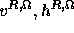
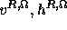

All the four energy functions  ,
,  ,
,  and
need to be minimized.
Minimization can be carried out
using any known global minimization technique, in this paper we use the simulated
annealing algorithm [19].
The general structure of the integrated stereo algorithm is as follows:
and
need to be minimized.
Minimization can be carried out
using any known global minimization technique, in this paper we use the simulated
annealing algorithm [19].
The general structure of the integrated stereo algorithm is as follows:
 for this task since it provides a multiresolution framework, which will be
used later on. Given the image , and
are obtained by
for this task since it provides a multiresolution framework, which will be
used later on. Given the image , and
are obtained by
A superscript L or R to the line fields will indicate the precomputed line fields for the left or the right image. This becomes a fixed input for Step 3 to Step 6.
 ,
,  ,
,  ,
,
 , and the disparity
, and the disparity  to zero.
to zero.
 , ,
, ,
 ,
,  ,
,  ,
,  ,
,  from the previous iteration and
from the previous iteration and  ;
;  is minimized.
This outputs .
is minimized.
This outputs .
 ,
,
 ,
,  ,
,  ,
,  from the previous iterations and ;
from the previous iterations and ;  is minimimized.
This outputs .
is minimimized.
This outputs .
 ,
,  ,
,  from the previous iterations and
from the previous iterations and  , ; is
minimized. This outputs
, ; is
minimized. This outputs  .
.
 , from the previous iterations;
, from the previous iterations;
 is minimized. This outputs
is minimized. This outputs  ,
,  .
.
We refer to Step 3 to Step 6 as one integrated iteration.
It is to be noted that the
precomputed line fields  are not
updated though used in the integration model, the idea being that they are adequate
enough and can be used by the model as a guiding line field map.
are not
updated though used in the integration model, the idea being that they are adequate
enough and can be used by the model as a guiding line field map.